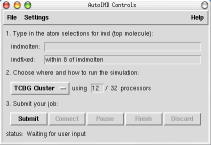
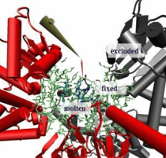

<!--#set var="TITLE" value="AutoIMD Plugin, Version 1.7"-->
<!--#include virtual="/Research/vmd/include/header-vmd.shtml"-->

<table>
<tr>
<td>
AutoIMD is a means of quickly starting a NAMD molecular dynamics simulations 
from atomic coordinates in VMD. The simulation can then be visualized in 
real-time on the VMD graphics screen. With the appropriate devices 
(such as a VRPN tracker), the user can also interact with a running 
simulation and apply forces to individual atoms or residues. 
Such an interaction is extremely useful when building and modeling systems, 
and can also be used to gain precious insights by tinkering with key residues 
and atoms. 

<h2>Documentation and Tutorials</h2>
<ul>
<li><a href=ug/>AutoIMD User's Guide</a> (On-line HTML)
<li><a href=ug.pdf>AutoIMD User's Guide</a> (PDF)
<li><a href="http://www.ks.uiuc.edu/Training/Tutorials/science/nanotubes/nanotubes-html/">"Simulation of Water Permeation Through Nanotubes"</a> tutorial using AutoIMD
</ul>

</td>
<td>


</td>
</tr>
</table>

<!--#include virtual="/Research/vmd/include/footer-vmd.shtml"-->
